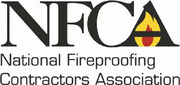

4specs.com
- Look for "A/D Fire Protection Systems" in Division 07, Thermal / Moisture Protection
AEC InfoCenter
- Look for "A/D Fire Protection Systems"in Division 07, Thermal and Moisture Protection
AES Northeast
(Architects, Engineering and Surveying)
AISC
- the American Institute of Steel Construction
Arcat
(The Architect's Catalogue)
Architectural Record
The Blue Book
Buildcore Products Source
CISC - Canadian Institute of Steel Construction
CSC - Construction Specifications Canada
Engineering.Com
("The Engineer' s Ultimate Resource Tool")
FCIA - Firestop Contractors International Association

The National Fireproofing Contractors Association
Southwest Fireproofing Products Company
- Type 5GP, Type 5EF, Type 5MD, Type 7GP, Type 7HD, Type 1XR, Type DK, Type HC and Type 7TB are trademarks of Southwest Fireproofing Products Co.
Steel Tube Institute of North America
Download PDF article "
HSS: Designs for the 21st Century
" featuring A/D FIREFILM ®
II
Sweet's Group
Links - Fire Safety, Standards, Testing and Certification Agencies
NFPA - National Fire ProtectionAssociation
ITS (Warnock Hersey)
Society of Fire Protection Engineers - Southern Ontario Chapter
UL
(
UL is not affiliated with A/D Fire and does not endorse this Web site.
)
ULC
Links - General